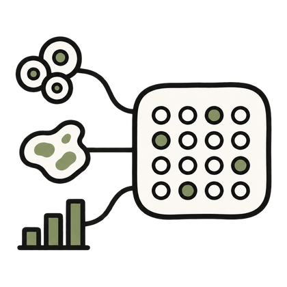
One API, AnnData throughout
The same ov.pp / ov.tl / ov.pl calls for every modality.

Open-source, open AI infrastructure, built together — OmicVerse.
 1.4kstars
1.4kstars
Every port maps the upstream R functions to Python or Rust and is checked against the R reference on a fixed fixture. Click a sticker to see its map.
Full scRNA-seq workflow on SEA-AD: 67 s and 13.5 GB of memory.
SEA-AD · 1.38M cells × 36,601 genes
Ten modules share one AnnData-first API. scanpy pipelines plug in unchanged.
import omicverse as ov
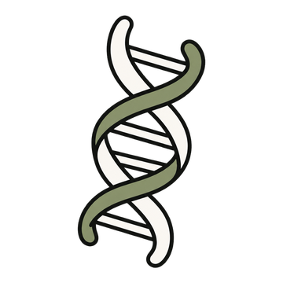
Assayov.align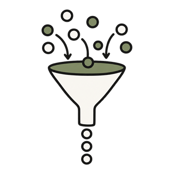
Preprocessov.pp Single-cellov.single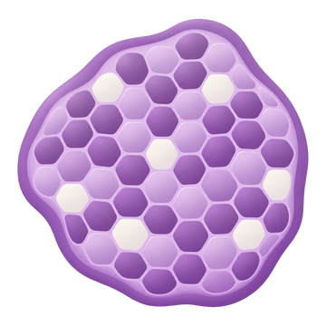
Spatialov.space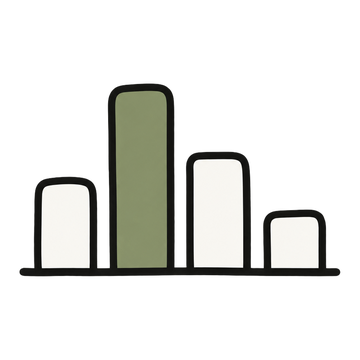
Bulkov.bulk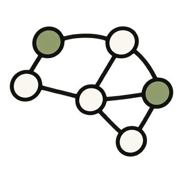
Foundationov.fm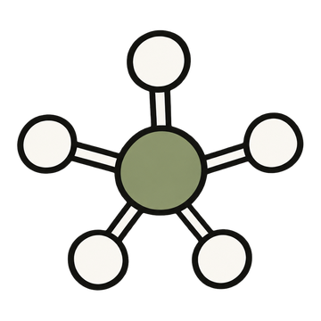
Molecularov.mol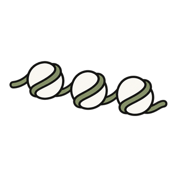
Epigenomicsov.epi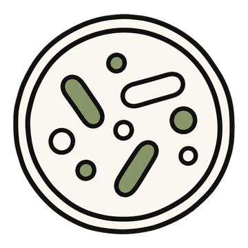
Microbiomeov.micro Metabolomicsov.metabolThe object stays AnnData the whole way, so scanpy, exports or an agent can take over at any step.
$ pip install omicverse import omicverse as ov adata = ov.datasets.pbmc8k() ov.pp.qc(adata, tresh={"mito_perc": 0.2, "nUMIs": 500}) ov.pp.preprocess(adata, mode="shiftlog|pearson", n_HVGs=2000) ov.pp.scale(adata); ov.pp.pca(adata, layer="scaled") ov.pp.neighbors(adata, use_rep="scaled|original|X_pca") ov.pp.umap(adata); ov.pp.leiden(adata) # adata.obs["leiden"] · adata.obsm["X_umap"]

The same ov.pp / ov.tl / ov.pl calls for every modality.
Every port pre-registers a parity gate and runs it against the R reference.
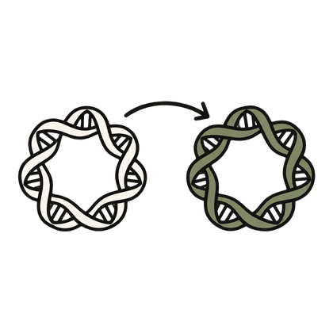
CRAN and Bioconductor methods without rpy2 or an R install.
Skills, tutorials and report templates let analysis agents run the stack end to end.
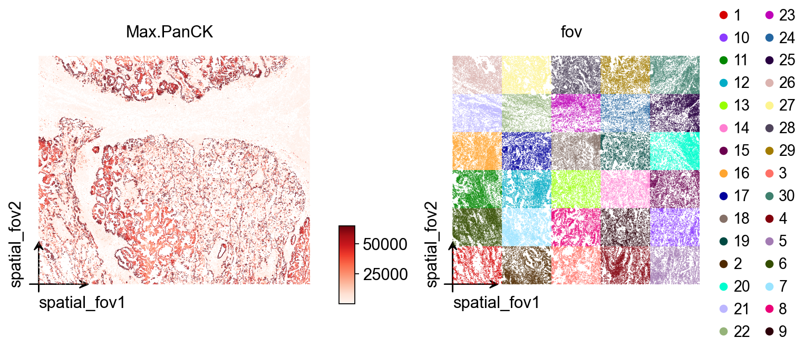
Blog · Spatial Analyzing NanoString CosMx data FOV-aware loading, segmentation checks and inputs for downstream spatial models.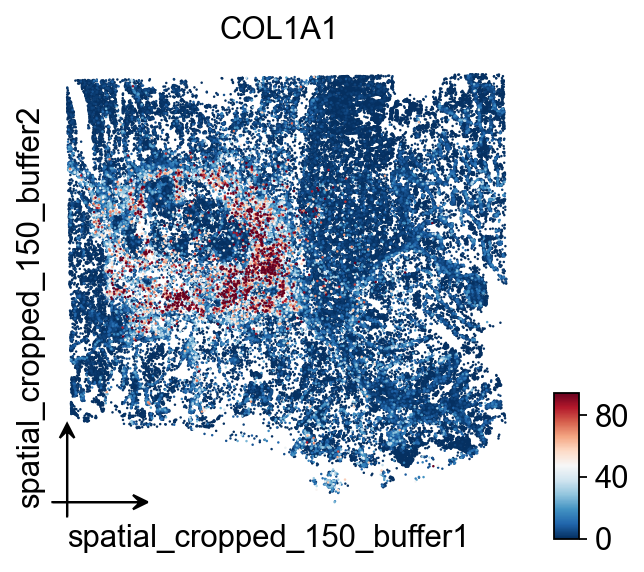
Blog · Segmentation Cell segmentation for Visium HD with Cellpose From 2 µm bins and H&E to cells, in pure Python.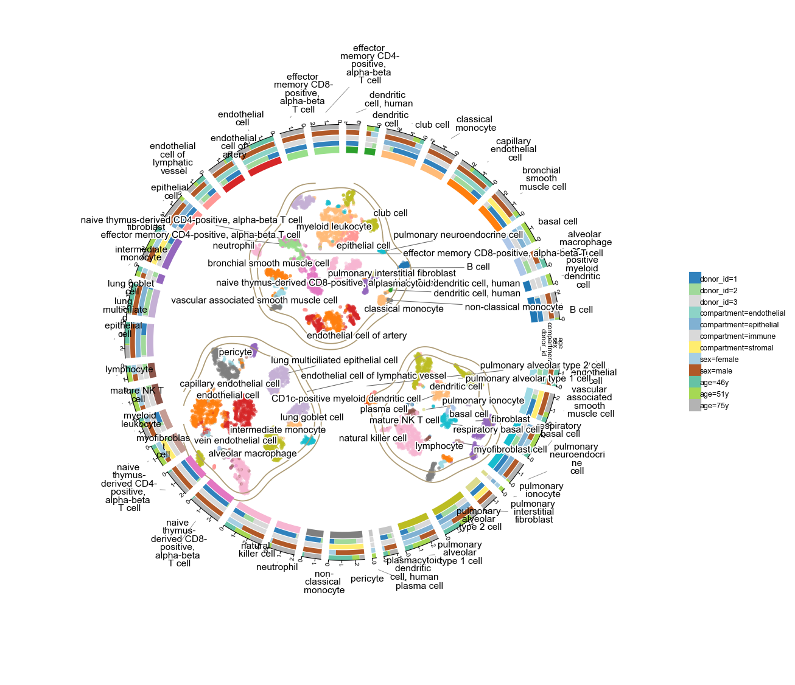
Blog · Visualization Circular UMAPs with plot1cell Cells in a ring, metadata around it, one call. Contribute
Contribute
Nominate an R package, follow the porting protocol, ship a verified wheel. The repository stays yours.